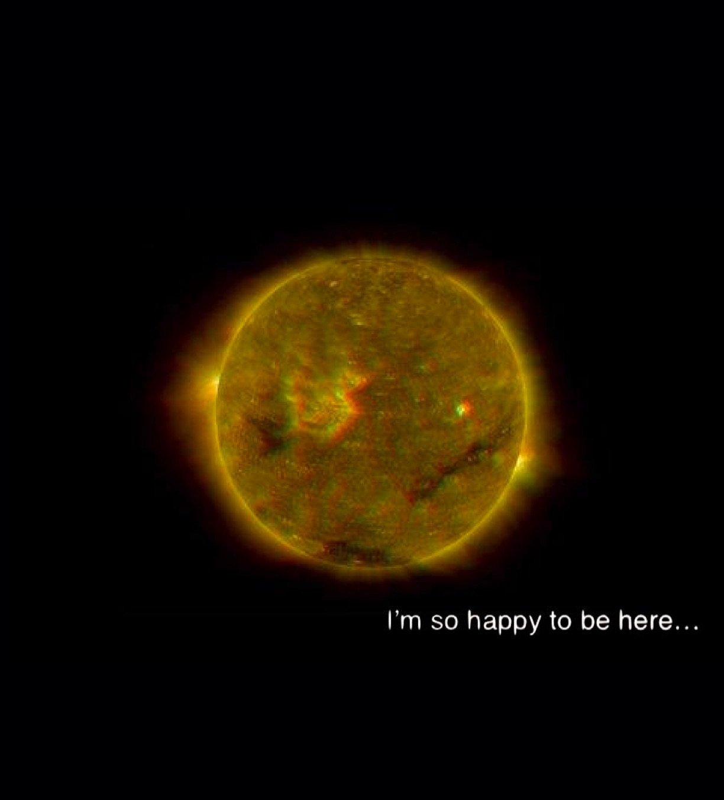
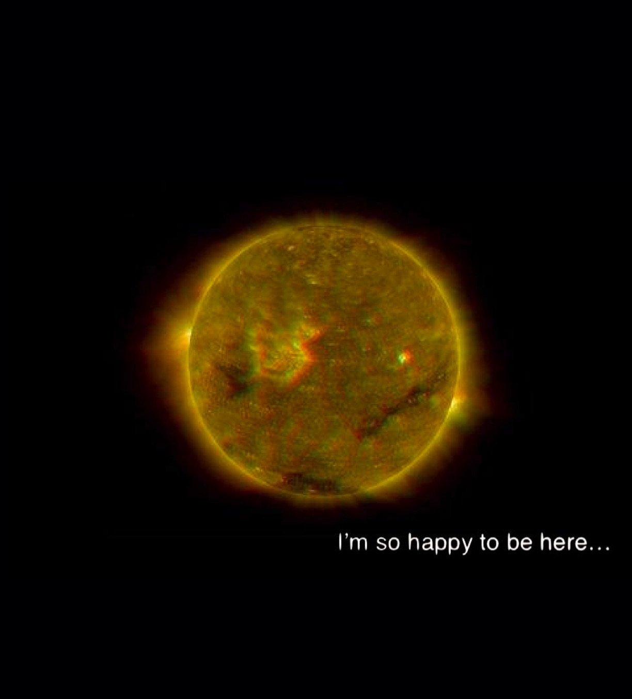
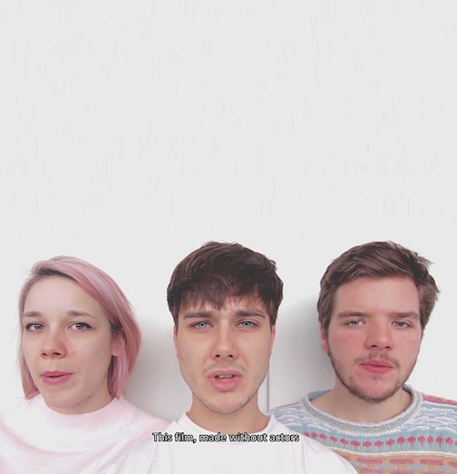
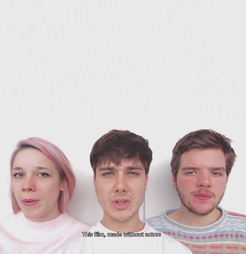
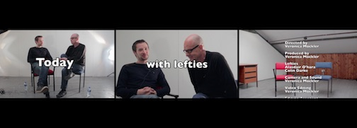
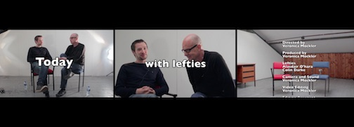

Veronica Mockler
THE LINEAGE OF RESILIENCE
archives, performances, interviews, moving-image | ongoing
Case-studies : Pakistan, El Salvador, Northern Ireland, U.S.A. and Canada.

This is a still image from the video footage of interview with Susana Hennessey and Bobby Lavery (Belfast, Northern Ireland / San Francisco, California, FALL 2017)
RIVIÈRES
Dec. 15-16 2017 | 8 individuals | CELO Côte-des-Neiges
Rivières is a series of documentary performances taking place in Côte-des-Neiges on December 15-16 2017 8PM(EST). 8 individuals who live and work in this borough will be presenting themselves to you in this innovative production. Created by Veronica Mockler and Sofia Blondin, funded by the City of Montreal's 375th anniversary. | rivieres375mtl.com
CANVASSERS
single-channel video | HD color + sound | 15:28 min | 2016
Mich and Marshall are asked to share a personal story in front of a camera. Both participants come to experience a unified understanding of events when one’s story is orally taken on by the other. This continuous one-shot 15-minute documentary performance demonstrates our empathetic capacity as individuals. This piece was made in response to recent scientific findings that demonstrate that a 10-minute active one-on-one conversation between two individuals can durably reduce longstanding ingrained prejudice.¹
These findings inspired this performance for video in addition to bringing an empirical premise to the artist’s constant use of human interaction as a conceptual and political device.
This work is distributed non-exclusively by Videographe | videographe.org
For more information about the work please contact info@videographe.org
¹ Science Mag 08 Apr 2016 | Vol. 352, Issue 6282, pp. 220-224 | DOI: 10.1126/science.aad9713 | Authors : David Broockman | Joshua Kalla
CANVASSERS in INTERSECTIONS : 16th BIENNIAL SYMPOSIUM FOR ARTS AND TECHNOLOGY
Canvassers has been selected to be part of INTERSECTIONS : 16th Biennial Symposium for Arts and Technology at the Ammerman Center for the Arts at Connecticut College. Featured events include a keynote address by Krzysztof Wodiczko AND * featured exhibition by Natalie Bookchin *! 2018 Biennial : February 15th, 16th and 17th.

A SERIES OF DOCUMENTARY PERFORMANCES
Rivières is opening of Dec. 15th in Côte-des-Neiges | RESERVE YOUR FREE TICKETS ONLINE :
Facebook | rivieres375mtl.com

VISIBLE.exposed
VISIBLE is the fruit of a collaboration between Sofia Blondin and myself. VISIBLE the art collective focuses on the individual’s position within society. Documentary processes are at the basis of their work. For more information on VISIBLE, visit visible.exposed.

SHOOTING A NEW VIDEO WORK.
Image still from video-critique I am developping on important man and their ties. More to come!

CHRONIQUE D'UN ÉTÉ IN MONTEVIDEO URUGUAY!
CHRONIQUE D'UN ÉTÉ // single channel | colour + sound | 09:58 minutes | 2016
has been selected for GSTAADFILM 2018 Art Film Festival in Montevideo, Uruguay.
The work is being translated in Spanish! Festival is on November 16-17-18, 2017.
This work borrows its title from famous French documentary classic CHRONIQUE D'UN ÉTÉ (directed by Edouard Morin and Jean Rouch, 1961). In a similar way to its predecessor, this contemporary Québécois take on cinema vérité also presents a youth particular to its time, place and economic status. CHRONIQUE D'UN ÉTÉ (directed by Veronica Mockler, 2016) documents the conversation of three young privileged white individuals belonging to a typical Western world demographic. The issues raised by this somewhat captivating group of friends constitute the artist’s critique. The futility of their interaction, though entertaining at first, slowly becomes alarming for anyone viewing the work. How these young people have the luxury to be solely concerned with their hair color is the reality the works aims to expose and subvert.

INTERVIEWS IN BELFAST, NORTHERN IRELAND / RESEARCH FALL 2017
Heading up to Belfast, Northern Ireland for research project on lineage of resilience. Interviewing former Sinn Fein Belfast City Council Member (New Lodge rep.) and sentenced Long Kesh prisoner, Bobby Lavery as well as Susana Hennessey, retired Educator of Community Health Equity / Population Health Division (San Francisco Department of Public Health, California) and Supervisor at La Clinica de La Raza (1979-1992).
Image source: republican-news.org/archive/2000/January27/27evic.html

DONATING A WORK TO GALERIE GALERIE . WEB FUNDRAISER!
Donating a series of .jpeg collages for Galerie Galerie . web Fundraiser Auction on August 31th 2017 @ Eastern Bloc | easternbloc.ca . Buy your tickets to encourage this pioneering/fabulous Montreal cyber art space and participate in Digital Art Montreal initiative. | www.galeriegalerieweb.com

RIVIÈRES IS NOW FUNDED BY THE NATIONAL THEATER SCHOOL OF CANADA'S T.E.C. PROGRAM!
The National Theatre School of Canada created permanent funds in several community foundations across Canada in order to support, in perpetuity, artistic projects conceived and produced by its’ alumni. The TEC (Theatre Engaging Communities) therefore serves to fund these projects, on condition that they are innovative in form or content and build ties with the community. This program combines the pursuit of artistic excellence with the determination to strengthen theatre’s social impact. | ent-nts.ca/en/tec

SCREENING OF THE LEFT POINT IN DAZIBAO MONTREAL!
Dazibao is screening THE LEFT POINT alongside works of Kathryn Elkin and Anna Hawkins as part of THIS IS NOT A LECTURE #4 - an outreach activity for exhibition TELEVISION curated by France Choinière and LUX (UK). Fabulous works on until June 17th, 2017. | dazibao.org

CANVASSERS IS GOING INTO DISTRIBUTION WITH VIDÉOGRAPHE!
CANVASSERS is going into distribution with one of Canada’s biggest and long-standing experimental film and video-art distributor : VIDÉOGRAPHE (CANADA). Very happy to be partnering up with this amazing Montreal institution! This distribution is non-exclusive. For any inquiries regarding this work, for both national or international showings, please contact : info@videographe.org | videographe.org

RESEARCH IN ICELAND
In Iceland during March 2017 gathering material for upcoming video essay on volcanoes and Donald Trump.

SOLO EXHIBITION OPENING IN REDDING FLAGG GALLERY [TORONTO, CANADA]
CANVASSERS curated by Christophe Barbeau is opening this Tuesday February 14th in Redding Flagg Gallery Toronto, Canada. Exhibition opening is on Tuesday the 14th from 6PM to 11PM. Very exciting exhibition installation work curatorial work by Christophe. It has been such a pleasure working with R/F Gallery!

Veronica Mockler (Canadian, b. 1991) is a visual artist working and living in Montréal, (Québec). Her practice stands at the crossroads of video art, documentary, performance and advocacy. She graduated from Concordia University in 2014 (Bachelor of Fine Arts with Distinction, Prog. Studio Arts, Dep. Intermedia Cyberarts). Her work has been featured locally and internationally in both solo and group exhibitions/screenings (Redding Flagg Gallery (Toronto), Dazibao, Eastern Bloc (Montréal), La Biennale Manif. d’Art Internationale (Québec), Gstaad International Festival (Uruguay), and more). Her video work is distributed by Vidéographe (Canada). Veronica has conducted research both in her country and abroad (Republic of Ireland, Northern Ireland and Iceland), has worked as a curator (Active Lens Montréal) and as a facilitator for arts outreach (Leonard and Bina Ellen Gallery, Montréal) in addition to receiving private (Ann Duncan Award, CUSRA Award, and more) and public funding (City of Montreal, MEESR Bursary, LOJIQ Grant, and more) for her work and research.
My work is about the radical experience of the other. Through case-studies, videos, performances and interviews, I work with individuals to create situations in which their representation challenges the audience's social status quo. I am driven by the idea that encountering the other enables one’s consideration of the other, something I believe is not only crucial right now, but can be conducive of progressive thought and action. I hold my contemporary art production socially accountable therefore dedicate my practice to finding new ways to represent and engage the political within and without the gallery space. I benefit from the societal advantages of being white and cis. In order to not extend this bias, I deconstruct my own privilege by making work that serves the reality and power of individuals, not mine.
© 2017 Veronica Mockler.
For any inquiries,
please contact the artist herself :
veronica.florence.mockler@gmail.com
Or her distributor VIDÉOGRAPHE at :
info@videographe.org
For more updates, follow her on :
instagram
The Creative Treatment of Actuality
single-channel | colour high-definition | sound | 8 minutes | 2013
This work was part of VIDEO LOCK : UNE PROJECTION D'ART VIDEO MONTRÉALAIS presented in September 2013 in LOCK GALLERY, Montreal Canada. The exhibition was curated by Stephanie Creaghan and Stephen Korzenstein. This work was nominated for Best Non-Fiction Video in the A.A.V.A. awards in SALA ROSSA, Montreal in February 2013.
Exhibiting Concern
video diptych | 4:3 colour | sound | loop
In Exhibiting Concern the viewer is presented with a bored and apathetic young man who could not care less about the position he is in. This light-hearted performance is amusing yet its level of insouciance is astonishing.
L'aparté
single channel | colour + sound | 7:14 minutes | 2013
This work is about self-determination within documentary representation. The artist placed six individuals alone in front of a camera. There is no time limit, no direction. Each participants can say or do what they want.
This work was part of BOY MEETS GIRL a group exhibition in August 2013 at former Black Lodge Montreal. BOY MEETS GIRL is a video program curated by Stephanie Creaghan and Stephen Korzenstein.
Le Premier Cycle
single-channel video | HD color + sound | loop
Le Premier Cycle is a dry yet playful demonstration of the absurdity of privilege. Two middle-class North American white women measure their luck systematically only to reach no conclusive result. The work presents us with a privilege that is unmeasurable, unfair and chaotic.
Deskjob
.jpeg | variation in size | 2017
A series of twelve images about life, love and capitalism for your screensaver. Viewing requirements : to be uploaded in your stock images for sleep mode.
Babies
single-channel video | colour | silent | 4:00 minutes | 2014
Babies is part of a series of shorts the artist produced around the themes of youth and privilege. In Babies , the viewer is presented with a group of young women who look at one another in a structured yet natural way. This contemplative video is a hypnotic exercise on the human gaze and its gendered experience.
CHRONIQUE D'UN ÉTÉ
single channel | colour + sound | 9:58 minutes | 2016
The work premiered on April 27, 2016 in Popspace Montreal in a solo exhibition of the artist’s work in collaboration with author Nick Williams. Accompanying exhibition literature : “The Mountains They Will Crumble”.
This work borrows its title from famous French documentary classic CHRONIQUE D'UN ÉTÉ (directed by Edouard Morin and Jean Rouch, 1961). In a similar way to its predecessor, this contemporary Québécois take on cinema vérité also presents a youth particular to its time, place and economic status. CHRONIQUE D'UN ÉTÉ (directed by Veronica Mockler, 2016) documents the conversation of three white and young privileged individuals belonging to a typical Western world demographic. The issues raised by this somewhat captivating group of friends constitute the artist’s critique. The futility of their interaction, though entertaining at first, slowly becomes alarming for anyone viewing the work. How these young people have the luxury to be solely concerned with their hair colour is the reality the works aims to expose and subvert.
23 / 11 / 2013
series of documentary performances | colour + sound | 2013
This performance took place on November 11, 2013. This work is part of a series of performances that follow the same structure. Participants, including the artist herself, answer a personal question in front of audience and/or camera.
This performance took place on November 11, 2013. This work is part of a series of performances that follow the same structure. Participants, including the artist herself, answer a personal question in front of audience and/or camera.
Persona
single-channel video | 15 minutes | color high-definition + sound | 2012
In this performance for video, the artist gets drunk and dances to music in front of a camera. Partying, as a social activity and state, is here isolated for observation. The artist wishes to assert why and how she adopts this state in real life as a privileged white person.
The performance took place on October 12th 2012.
Nadia
digital prints | variation in size | documentation of performance | 2013
"Nadia and I don't really know one another. I asked her one day when seeing her in the hall of my apartment building if she would be interested in spending an afternoon with me. She answered : «why not». I went over to her apartment the following week. I spent an afternoon with Nadia, in her home. She made me coffee, we chatted about her life here, her life then, and she showed me her family pictures. When I left she offered me a case of 12 juice pouches."
The Second Listing
series performances | ongoing
The Second Listing is a performance part of a series the artist developed initially in 2012. In each rendition, Mockler goes on to list aloud everything that she is and everything that she is not at that specific time, in front of an audience.
Following is the documentation of the second listing which took place on January 11, 2014. This performance was part of DOUBLETAKE: AN EVENT OF POTENTIALITY a group exhibition curated by Naakita Feldman-Kiss in Gallery LOCK, Montréal Canada.
23 / 03 / 2014
series of documentary performances | colour + sound | 2014
This performance took place on March 23, 2014. This work is part of a series of performances that follow the same structure. Participants, including the artist herself, answer a personal question in front of audience and/or camera.
This work was part of ACTIVE LENS a group exhibition presented in the Belgo Building at Galerie 514, Montreal Canada. It was commissioned by Performance art in Montreal; the documentary (Dir. Marianne Métivier) and co-curated by Laurent Viau Lapointe.
The First Listing
series performances | ongoing
The First Listing is a performance part of a series the artist developed initially in 2012. In each rendition, Mockler goes on to list aloud everything that she is and everything that she is not at that specific time, in front of an audience.
This work was presented in the Intermedia-Cyberart Performances in Concordia University during January 2012.
The Left Point
video series | HD color + sound | 2017
The Left Point is an attempt to make the audience realize the extent to which their understanding of news events can be manipulated. Through extreme censorship, the artist deliberately removes any possibility of accurate interpretation by suppressing the very opinions and discussions she set out to expose.
This video-episode is the first of a series of works where entertainment, fake news and clickbait tactics are put to the test. The initial performances and footage of this first episode were produced in post Brexit-referendum Belfast, Northern Ireland in November 2016 in the midst of Donald Trumps final ascendancy to presidency. The artist asked 10 inviduals who identify as progressives to sit down and disagree with one another.


 

 



 
